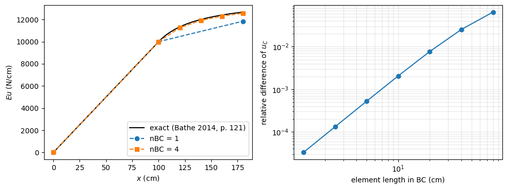

Linear static analysis#
A linear static analysis solves the equilibrium equations \(\boldsymbol{K} \boldsymbol{u} = \boldsymbol{f}\) for the displacement vector \(\boldsymbol{u}\), with the stiffness matrix \(\boldsymbol{K}\) and the external force vector \(\boldsymbol{f}\). This example solves them with the function solve, the function static and the class Analysis, for the bar of Bathe (2014), Example 3.22, whose exact solution is known.
Reference. Bathe, K.J., Finite Element Procedures, 2nd ed., K.J. Bathe, Watertown, MA, 2014: Example 3.22 (pp. 120-122) and Example 4.5 (pp. 167-168).
[1]:
%matplotlib inline
import numpy as np
import matplotlib.pyplot as plt
from scipy.sparse import lil_matrix, csc_matrix
from structsolve import Analysis, solve, static
The bar of Bathe’s Example 3.22#
The bar is fixed at \(x = 0\) and loaded by the force \(R = 100\) N at its end \(x = 180\) cm. Its cross-sectional area is \(A = 1\) cm\(^2\) in the part AB, \(0 \le x \le 100\) cm, and \(A = (1 + (x - 100)/40)^2\) cm\(^2\) in the part BC, \(100 \le x \le 180\) cm. The exact displacements are (Bathe 2014, Example 3.22, p. 121)
with Young’s modulus \(E\); the axial force is \(R = 100\) N everywhere. The results below are given as \(E u\), in N/cm, i.e. with \(E = 1\).
The finite element model uses two-node bar elements with linear displacements, as in Bathe’s Example 4.5. The stiffness matrix of an element between \(x_1\) and \(x_2\), of length \(l = x_2 - x_1\), is
with the integral of the area evaluated exactly. The part AB, of constant area, is one element; the part BC is divided into nBC elements.
[2]:
E = 1. # results are E*u
R = 100. # N
def area_integral(x1, x2):
# exact integral of the cross-sectional area A(x) from x1 to x2, cm^3
if x2 <= 100.:
return x2 - x1
s1, s2 = x1 - 100., x2 - 100.
return 40/3*((1 + s2/40)**3 - (1 + s1/40)**3)
def bar_model(nBC):
# nodes, stiffness matrix with all dofs and force vector
x = np.concatenate(([0.], np.linspace(100., 180., nBC + 1)))
n = x.size
K = lil_matrix((n, n))
for e in range(n - 1):
x1, x2 = x[e], x[e + 1]
k = E*area_integral(x1, x2)/(x2 - x1)**2
K[e:e+2, e:e+2] += k*np.array([[1., -1.], [-1., 1.]])
f = np.zeros(n)
f[-1] = R
return x, K, f
def u_exact(x):
x = np.asarray(x, dtype=float)
s = np.maximum(x - 100., 0.)
return np.where(x <= 100., R*x/E,
10000/E + 4000/E - 4000/(E*(1 + s/40)))
With two elements, the stiffness matrix of all degrees of freedom \(\boldsymbol{U}^\top = [U_1\ U_2\ U_3]\) is that of Bathe’s Example 4.5 (p. 168, Eq. (a)), \(\boldsymbol{K} = \frac{E}{240} \begin{bmatrix} 2.4 & -2.4 & 0 \\ -2.4 & 15.4 & -13 \\ 0 & -13 & 13 \end{bmatrix}\):
[3]:
x, K, f = bar_model(nBC=1)
print('240 K/E =')
print(np.round(240*K.toarray()/E, 10))
240 K/E =
[[ 2.4 -2.4 0. ]
[ -2.4 15.4 -13. ]
[ 0. -13. 13. ]]
Boundary conditions and solve#
The matrix above is singular: the bar is free to move as a rigid body. The fixed end \(U_1 = 0\) is imposed by zeroing the row and the column of \(U_1\). solve removes the null rows and columns before solving with scipy.sparse.linalg.spsolve, and returns zero at the removed degrees of freedom; the force at a removed degree of freedom is ignored. The model of two elements is Bathe’s Ritz analysis with the displacement assumption (c), which gives
\(u_B = 10000/E\) and \(u_C = 11846.2/E\) (Bathe 2014, Example 3.22, p. 122; Example 4.5 shows that it is the finite element model).
[4]:
def fix_first_dof(K):
K = K.tolil(copy=True)
K[0, :] = 0.
K[:, 0] = 0.
return csc_matrix(K)
Kc = fix_first_dof(K)
u = solve(Kc, f, silent=True)
print('E u at the nodes x =', x, 'cm:', u)
print()
print(f'{"":5s} {"structsolve":>12s} {"Bathe p.122":>12s} {"rel. diff.":>10s}'
f' {"exact p.121":>12s} {"rel. diff.":>10s}')
for name, ui, ref in [('u_B', u[1], 10000.), ('u_C', u[2], 11846.2)]:
xi = 100. if name == 'u_B' else 180.
ex = u_exact(xi)
print(f'{name:5s} {ui:12.1f} {ref:12.1f} {abs(ui - ref)/ref:10.1e}'
f' {ex:12.1f} {abs(ui - ex)/ex:10.1e}')
E u at the nodes x = [ 0. 100. 180.] cm: [ 0. 10000. 11846.15384615]
structsolve Bathe p.122 rel. diff. exact p.121 rel. diff.
u_B 10000.0 10000.0 1.6e-15 10000.0 1.6e-15
u_C 11846.2 11846.2 3.9e-06 12666.7 6.5e-02
The structsolve solution reproduces Bathe’s values to the digits he printed. The part AB is exact with one element, since the axial force, \(R\) in every element, and the area are constant there; the displacement of C is lower than the exact one, because the element stiffness above, with the mean area, is higher than the exact stiffness of the tapered part.
Mesh refinement#
The tip displacement \(u_C\) converges to the exact value as the part BC is divided into more elements:
[5]:
nBCs = [1, 2, 4, 8, 16, 32, 64]
uC = []
for nBC in nBCs:
x, K, f = bar_model(nBC)
uC.append(solve(fix_first_dof(K), f, silent=True)[-1])
uC = np.array(uC)
uC_exact = u_exact(180.)
err = abs(uC - uC_exact)/uC_exact
print(f'{"nBC":>4s} {"E u_C":>12s} {"exact":>12s} {"rel. diff.":>10s}'
f' {"observed order":>15s}')
for i, nBC in enumerate(nBCs):
order = '' if i == 0 else f'{np.log(err[i-1]/err[i])/np.log(2):15.2f}'
print(f'{nBC:4d} {uC[i]:12.4f} {uC_exact:12.4f} {err[i]:10.2e} {order}')
nBC E u_C exact rel. diff. observed order
1 11846.1538 12666.6667 6.48e-02
2 12345.8647 12666.6667 2.53e-02 1.35
4 12568.9854 12666.6667 7.71e-03 1.72
8 12640.5760 12666.6667 2.06e-03 1.90
16 12660.0221 12666.6667 5.25e-04 1.97
32 12664.9975 12666.6667 1.32e-04 1.99
64 12666.2489 12666.6667 3.30e-05 2.00
The observed order of convergence, \(\log_2\) of the ratio of the relative differences of two successive meshes, approaches 2: the relative difference decreases by a factor of about four when the element length is halved. The displacements along the bar:
[6]:
xx = np.linspace(0., 180., 361)
fig, axes = plt.subplots(1, 2, figsize=(10, 3.8))
axes[0].plot(xx, u_exact(xx), 'k-', label='exact (Bathe 2014, p. 121)')
for nBC, mk in [(1, 'o--'), (4, 's--')]:
x, K, f = bar_model(nBC)
u = solve(fix_first_dof(K), f, silent=True)
axes[0].plot(x, u, mk, label=f'nBC = {nBC}')
axes[0].set_xlabel('$x$ (cm)')
axes[0].set_ylabel('$E u$ (N/cm)')
axes[0].legend()
axes[1].loglog(80./np.array(nBCs), err, 'o-')
axes[1].set_xlabel('element length in BC (cm)')
axes[1].set_ylabel('relative difference of $u_C$')
axes[1].grid(True, which='both', alpha=0.3)
plt.tight_layout()
plt.show()

static and Analysis#
static solves the same system with solve and returns the load factor [1.] and the list of solutions. The class Analysis receives callables that calculate the external force vector and the stiffness matrix, here of the model with nBC = 16; its method static with NLgeom=False runs a linear analysis, stored in the attributes increments and cs. Both give the solution of solve:
[7]:
x, K, f = bar_model(nBC=16)
Kc = fix_first_dof(K)
u_solve = solve(Kc, f, silent=True)
increments, cs = static(Kc, f, silent=True)
u_static = cs[0]
def calc_fext(inc=1., silent=True):
return inc*f
def calc_kC(c=None, NLgeom=False, silent=True):
return Kc
an = Analysis(calc_fext=calc_fext, calc_kC=calc_kC)
an.static(NLgeom=False, silent=True)
u_analysis = an.cs[-1]
print('static: increments =', increments)
print('Analysis: increments =', an.increments)
print()
print(f'{"function":10s} {"E u_C":>12s} {"exact":>12s} {"rel. diff.":>10s}'
f' {"max |u - u_solve|":>18s}')
for name, ui in [('solve', u_solve), ('static', u_static),
('Analysis', u_analysis)]:
print(f'{name:10s} {ui[-1]:12.4f} {uC_exact:12.4f}'
f' {abs(ui[-1] - uC_exact)/uC_exact:10.2e}'
f' {np.abs(ui - u_solve).max():18.1e}')
static: increments = [1.0]
Analysis: increments = [1.0]
function E u_C exact rel. diff. max |u - u_solve|
solve 12660.0221 12666.6667 5.25e-04 0.0e+00
static 12660.0221 12666.6667 5.25e-04 0.0e+00
Analysis 12660.0221 12666.6667 5.25e-04 0.0e+00